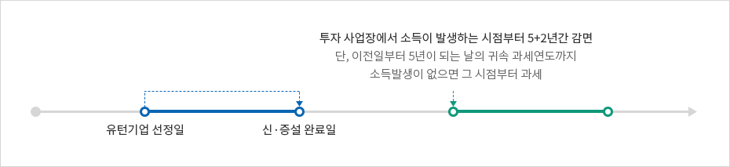
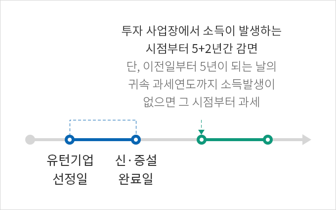
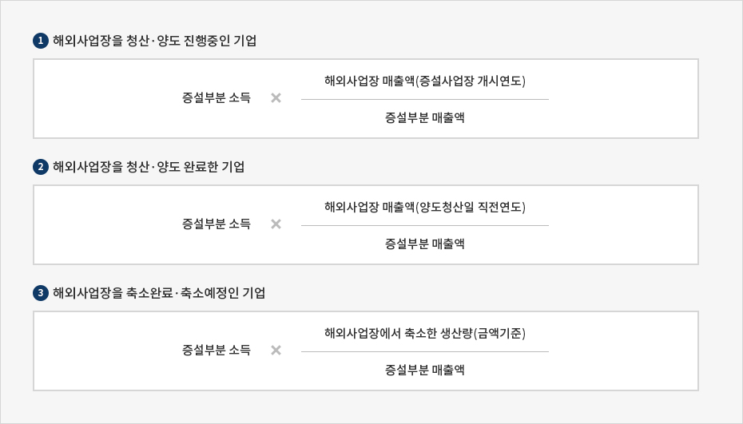
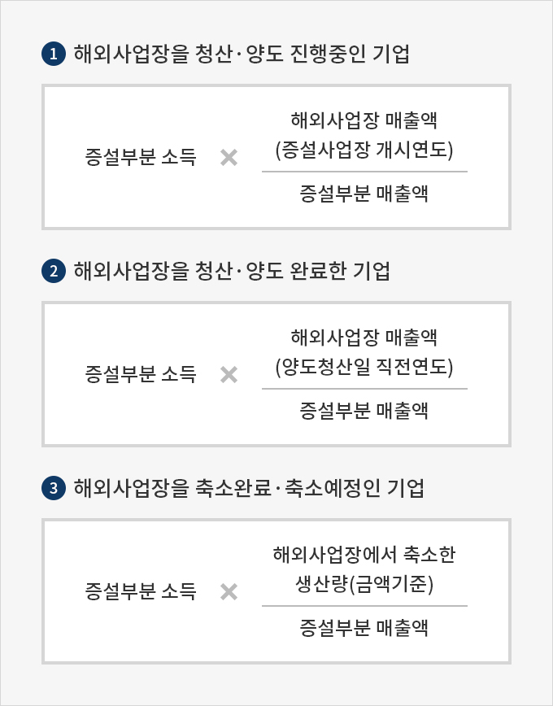

세제 지원
- Home
- 국내복귀기업지원
- 사업소개
- 세제 지원
지원 조건
- 수도권과밀억제권역 외의 지역에 입주할 것
- 창업하거나 신ㆍ증설하여 사업을 개시한 날부터 4년 이내에 해외사업장을 양도하거나 폐쇄할 것
- 해외사업장을 양도하거나 폐쇄한 날 부터 1년 이내에 창업하거나 사업장을 신설ㆍ증설할 것
- 해외사업장을 부분 축소(생산량 50% 이상)1)하거나 유지(국내사업장이 없는 경우에 한함) 할 것
- 복귀 전ㆍ후 영위 업종이 한국표준산업분류에 따른 세분류를 기준으로 동일할 것
1) 해외사업장 축소 요건 : 2021년 제도 개정 예정
지원 내용
법인세
신ㆍ증설 사업장에서 소득이 발생하는 시점부터 세액감면
| 해외사업장 | 국내사업장(신설 또는 증설) | |
|---|---|---|
| 수도권 | 수도권 이외 | |
| 청산 · 양도 | 5년간 100% +2년간 50% | 5년간 100% + 2년간 50% |
| 축소 · 유지 | 3년간 100% + 2년간 50% | |




국내사업장을 “증설”하여 소득 발생한 경우, 아래 증설소득범위만 인정


- 해외사업장을 청산ㆍ양도 진행중인 기업(증설부분 소득 X (해외사업장 매출액(증설사업장 개시연도)/증설부분 매출액)
- 해외사업장을 청산ㆍ양도 완료한 기업(증설부분 소득 X (해외사업장 매출액(양도청산일 직전연도)/증설부분 매출액)
- 해외사업장을 축소 완료ㆍ예정인 기업(증설부분 소득 X (해외사업장에서 축소한 생산량(금액기준)/증설부분 매출액)

관세
신규 또는 중고 자본재 수입 시 발생하는 관세에 대해 감면
| 해외사업장 | 국내사업장 | 관세감면율 |
|---|---|---|
| 청산 · 양도 | 신설 또는 증설 | 100% |
| 축소 · 유지 | 50% |
신청시기 · 신청장소
| 구분 | 법인세 | 관세 |
|---|---|---|
| 신청시기 | 최초 소득이 발생한 과세연도 법인세 신고 시 | 신규 또는 중고 자본재 수입 시 |
| 신청장소 | 신청기업 소재지 관할 세무서 | 관세청, KOTRA 국내복귀기업 지원센터 |
| 제출서류 |
|
|
문의처
- 국세청 126 / 홈페이지 참조：www.nts.go.kr
- KOTRA 국내복귀기업지원센터 02-3460-7361~4